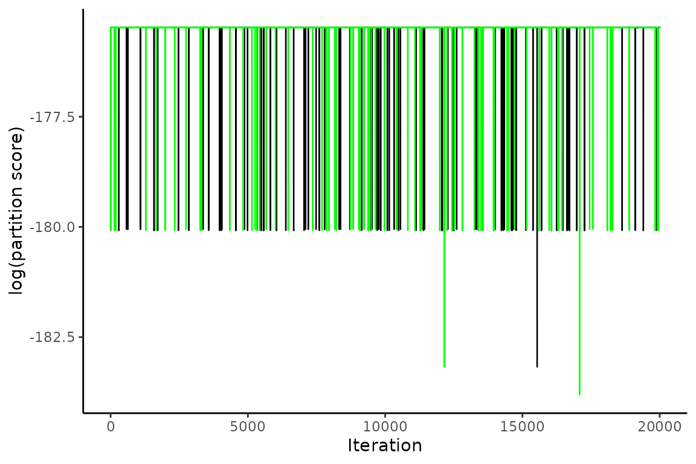
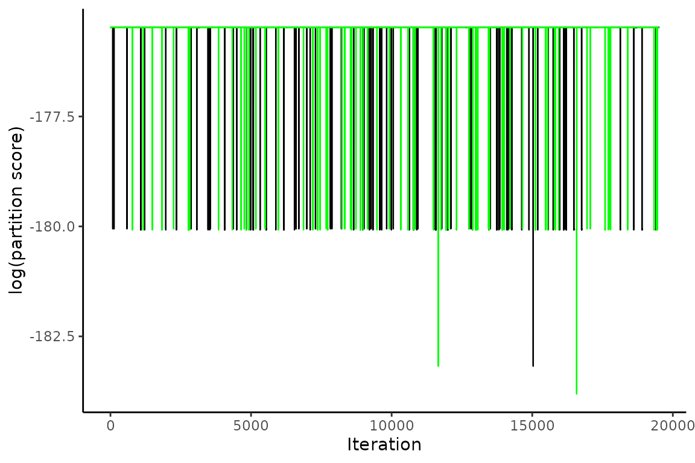
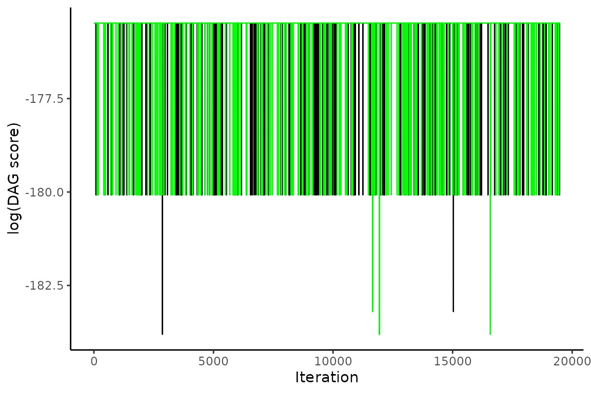
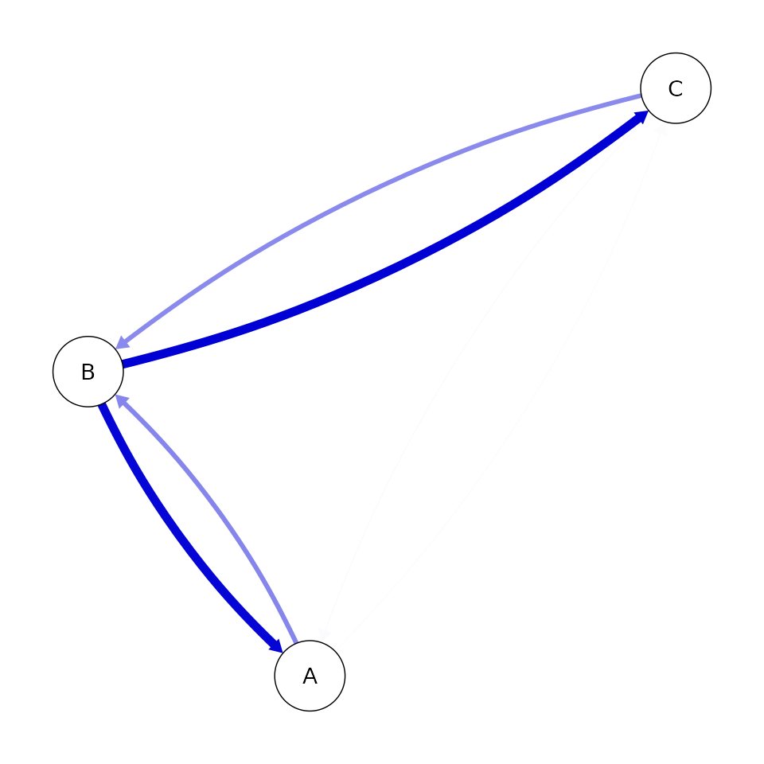
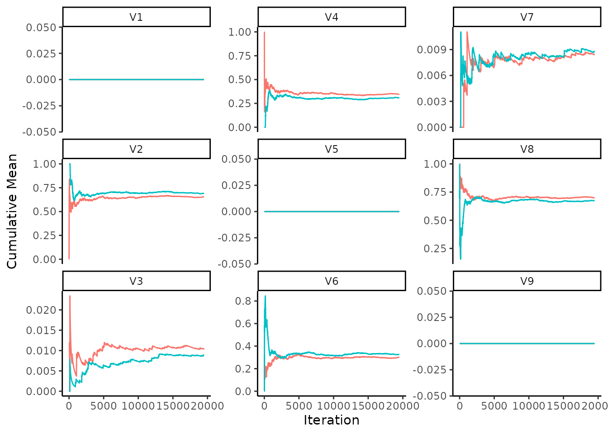
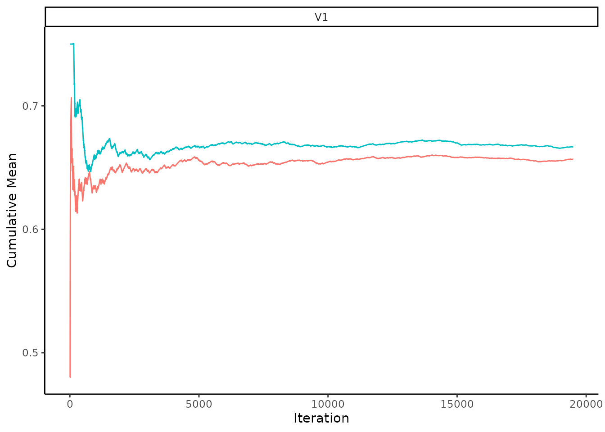

An Example of using the Causal Inference Assistant (CIA)
Mathew Varidel
30 October, 2024
Source:vignettes/three_node_example.Rmd
three_node_example.RmdWhat is this for?
This shows the basic usage of the Causal Inference Assistant (cia) for a simple three node problem, where we can calculate the probabilities of each DAG analytically.
Causal structure learning
Create conditional probability tables for the true DAG. This draws samples from a DAG where \(A\) and \(C\) have a common cause \(B\), given by \(A \leftarrow B \rightarrow C\).
set.seed(1)
n <- 100
b <- rbinom(n, 1, 0.5)
c <- as.vector(n, 'numeric')
n_b <- sum(b == 1)
c[b == 1] <- rbinom(n_b, 1, 0.33)
c[b == 0] <- rbinom(n - n_b, 1, 0.9)
a <- as.vector(n, 'numeric')
a[b == 1] <- rbinom(n_b, 1, 0.67)
a[b == 0] <- rbinom(n - n_b, 1, 0.33)
a <- ifelse(a == 1, 'yes', 'no')
b <- ifelse(b == 1, 'yes', 'no')
c <- ifelse(c == 1, 'yes', 'no')
dat <- data.frame(A = as.factor(a), B = as.factor(b), C = as.factor(c))
knitr::kable(head(dat))| A | B | C |
|---|---|---|
| no | no | yes |
| yes | no | yes |
| yes | yes | no |
| yes | yes | no |
| yes | no | yes |
| yes | yes | no |
Let’s calculate the correlation matrix to get an idea of the marginal dependencies in the data. This suggests that (\(A\), \(B\), \(C\)) are marginally dependent which is what you would expect for the DAG that we are studying.
| A | B | C | |
|---|---|---|---|
| A | 1.0000000 | 0.5192308 | -0.3397902 |
| B | 0.5192308 | 1.0000000 | -0.7091273 |
| C | -0.3397902 | -0.7091273 | 1.0000000 |
Calculate analytical probabilities for each graph
Get all possible graphs.
GetAllDAGs <- function(nodes) {
n <- length(nodes)
n_tri <- n*(n - 1)/2
tri_comb <- rep(list(c(0L, 1L)), n_tri)
tri_val <- expand.grid(tri_comb)
node_perm <- gtools::permutations(length(nodes), length(nodes), nodes)
all_dags <- list()
n <- 1
for (i in 1:nrow(node_perm)) {
for (j in 1:nrow(tri_val)) {
mat <- matrix(
0L,
nrow = length(nodes),
ncol = length(nodes),
dimnames = list(node_perm[i, ], node_perm[i, ])
)
mat[upper.tri(mat)] <- as.integer(tri_val[j, ])
mat <- mat[nodes, nodes]
all_dags[[n]] <- mat
n <- n + 1
}
}
all_dags <- unique(all_dags)
return(all_dags)
}
nodes <- colnames(dat)
all_dags <- GetAllDAGs(nodes)Score all possible DAGs against the simulated data.
scorer <- CreateScorer(data = dat, type = 'bde', cache = TRUE)
score_all_dags <- all_dags |>
lapply(ScoreDAG, scorer = scorer) |>
unlist()
hash_all_dags <- all_dags |>
lapply(rlang::hash) |>
unlist()Convert the scores into expected probabilities.
Sample from the posterior using MCMC
Let’s sample from the posterior using the cia implementation of partition MCMC (Kuipers & Moffa, 2017). Below I sample two chains, so that we can compare the between chain convergence of estimated quantities. Typically, we would suggest running four chains by default (Vehtari et al., 2021).
set.seed(1)
n_results <- 20000
n_chains <- 2
init_partitions <- list()
for (i in 1:n_chains) {
init_dag <- UniformlySampleDAG(nodes)
init_partitions[[i]] <- DAGtoPartition(init_dag)
}
#> Loading required namespace: igraphFor the sampling below I will only use the move-node proposal. There are some minor issues with following detailed balance by using the others. The details of this will be ignored for now.
chains <- SampleChains(n_results,
init_partitions,
transition = PartitionMCMC(
proposal = DefaultProposal(p = c(0.0, 1.0, 0.0, 0.0, 0.0))
),
scorer = scorer,
n_parallel_chains = n_chains)Analysing the MCMC chains.
A good way to start your analysis on the chains is to understand it’s dependency on the initial starting value. This can be done graphically by plotting the score of both chains. This plot is often referred to as the score trace.
PlotScoreTrace(chains, ylab = 'log(partition score)', type = 'l')
The graph suggests that PMCMC spends a number of steps at the start of the chains to converge to a stable point. This is called the burnin and should be removed. I remove 500 steps as a burnin and plot the trace again.
n_burnin <- 500
eq_chains <- chains[(1 + n_burnin):n_results]
PlotScoreTrace(eq_chains, ylab = 'log(partition score)', type = 'l')
Qualitatively check the DAG score chains for convergence
The above suggests that the chains have converged with respect to the partition score. However, we want to study DAGs, so let’s convert the partitions to DAGs and then see if the DAG score has converged.
eq_dag_chains <- PartitiontoDAG(eq_chains, scorer)Plot trace of DAG scores for equilibrium states.
PlotScoreTrace(eq_dag_chains, attribute = 'log_score', ylab = 'log(DAG score)', type = 'l')
Quantitatively check the convergence of the score trace
On inspection the score trace for both partitions and DAGs appears to have converged across chains. We can also use quantitative measures, such as the the Split R-hat convergence statistic and the the effective sample size S_eff (Gelman et al., 2013; Vehtari et al., 2021). We can do this for the log-score of the partitions:
| Mean | SD | MCSE | S_eff | R_hat |
|---|---|---|---|---|
| -175.5264 | 0.5008356 | 0.0056417 | 7880.835 | 1.000041 |
This can also be performed for the log DAG scores.
| Mean | SD | MCSE | S_eff | R_hat |
|---|---|---|---|---|
| -175.5604 | 0.6141565 | 0.0058787 | 10914.22 | 1.000044 |
The Split R-hat statistic provides a measure of the convergence of the chains (Gelman et al., 2013). R-hat values closer to 1 are considered to have greater evidence for convergence, with the latest recommendations suggesting to aim for R-hat < 1.01 (Vehtari et al., 2021). The R_hat should only be relied upon when the total effective sample size across the chains is S_eff > 400 and the average effective sample size per chain is N_eff > 100.
You can think of the effective sample size as the approximate number of independent samples from the posterior distribution you have for the quantity of interest. If you’re just reporting the mean and/or the standard deviation of a parameter, then Vehtari et al. (2021) suggest that that the total effective sample size should be greater than 400. If you want to report quantiles (e.g., 95% credible intervals) the effective sample size may need to be on the order of thousands of samples to constrain the tail of the distribution (e.g., Kruschke, 2021).
As a caveat to the above, note that these recommendations are adapted from other applications of MCMCs, typically for estimating parameters that are continuous variables. Further research needs to be undertaken to be sure that this applies to sampling of DAGs and derived quantities.
Analysing acceptance rates
It’s often a good idea to check the proposal acceptance rates. For most problems where an MCMC is applied the acceptance rates should be in the region 0.1 to 0.5. Below we calculate the acceptance rates per chain, and fortunately the acceptance rates are consistent with the typical MCMC ranges in this case.
We note that in our experience PMCMC acceptance rates can be very low. This is something that needs to be further investigated. In such cases, it is important to ensure that the PMCMC is capable of walking out of local maxima. One way to do this is to check that chains starting from different locations converge to the same distribution.
total_accept <- CalculateAcceptanceRates(eq_chains, group_by = 'chain')
knitr::kable(total_accept)| chain | mean_accept | mean_black_obeyed | mean_white_obeyed | n_accept | n_total |
|---|---|---|---|---|---|
| 1 | 0.1201538 | 1 | 1 | 2343 | 19500 |
| 2 | 0.1192308 | 1 | 1 | 2325 | 19500 |
Estimating probabilities for each DAG
This shows the comparison between the estimated (p_est) and true (p_true) posterior probabilities for the top five DAGs that were visited in the sampling procedure. If the sampling procedure has worked well, then the two values should be approximately equal. Our experiments suggest that the cia implementation of PMCMC gets within a few percent of the true posterior probability for the true DAG in this problem.
flat_eq_chains <- FlattenChains(eq_dag_chains)
collect_dags <- CollectUniqueObjects(flat_eq_chains)
p_ordered_dags <- sort(collect_dags$log_sampling_prob,
decreasing = TRUE,
index.return = TRUE)
for (i in 1:5) {
adj <- collect_dags$state[[p_ordered_dags$ix[i]]]
bn_obj <- toBNLearn(adj)
plot(bn_obj)
p_est <- p_ordered_dags$x[i] |>
exp() |>
round(4)
p_true <- p_summary |>
dplyr::filter(hash_dag == rlang::hash(adj)) |>
dplyr::select(p_true) |>
as.numeric() |>
round(4)
t <- paste('p_est: ', round(p_est, 4),
', p_true: ', round(p_true, 4), sep = '')
graphics::text(300, 0, t)
}Causal inference given the distribution of DAGs.
We can use the posterior distribution of DAGs to estimate a number of causal estimands of interest.
Inferring direct causes
For example, what nodes directly affect each other. This corresponds to the propensity of an edge occurring in the posterior sample of DAGs.
flat_eq_dag_chains <- FlattenChains(eq_dag_chains)
p_edge <- CalculateEdgeProbabilities(flat_eq_dag_chains)
knitr::kable(p_edge)| A | B | C | |
|---|---|---|---|
| A | 0.0000000 | 0.3176410 | 0.0080256 |
| B | 0.6821538 | 0.0000000 | 0.6747949 |
| C | 0.0092821 | 0.3252051 | 0.0000000 |
This can also be represented graphically in what is often referred to as a consensus graph (e.g., Kuipers et al., 2019; Moffa et al., 2023).
qgraph::qgraph(p_edge, theme = 'colorblind')
It is always good practice to check the convergence for all reported values. This can be done using the convergence and effective sample statistics mentioned above. In this case, I will also highlight the other reported value is the Monte Carlo Standard Error (MCSE). This is an estimate of the MCMC contribution to the uncertainty of the mean. Running the MCMC for longer will reduce this value. This value should be reduced to a standard that you are comfortable reporting. As we’re considering edge probabilities, a natural target is to reduce the error of the mean to below 1% corresponding to MCSE<0.01.
pedge_sample <- SampleEdgeProbabilities(eq_dag_chains)
knitr::kable(summary(pedge_sample)[[3]])
|
Qualitative checks are also a good idea to supplement the quantitative checks. In the below plot each point represents the marginalised edge probability for a given edge in chain 1 (x) compared to chain 2 (y). Points that lie close to the x = y line suggest that the chains have converged. This is referred to as a concordance plot (Suter et al., 2023).
p_edge <- CalculateEdgeProbabilities(eq_dag_chains)
PlotConcordance(p_edge)Another way to check the convergence is to look at the cumulative mean over the chains (Suter et al., 2021). This can be performed by first drawing from the posterior predictive chain, which involves sampling whether there is an edge per sampling iteration. The cumulative mean can then be calculated from this chain. Eventually the two chains for the cumulative mean should stabilise to approximately the same value. Note that in Suter et al. (2021) they show the within chain cumulative mean trace, instead we show the the cumulative mean trace per pairwise edge probability for multiple chains, to check both the within and between chain convergence.
pedge_sample <- SampleEdgeProbabilities(eq_dag_chains)
PlotCumulativeMeanTrace(pedge_sample, nrow = 3, ncol = 3, dir = 'v')
Inferring causes
The edge probability doesn’t correspond to the probability that A is a cause of B. For that, we must calculate the probability that there is any directed path from A to B (i.e., A is an ancestor of B). Below, we will just calculate a point estimate for the ancestor probability for all node pairs. Convergence and effective sample size checks should be performed for these values for a complete analysis.
p_feature <- function(dag) {
dagitty_obj <- dag |>
toBNLearn() |>
dagitty::as.dagitty()
col_names <- colnames(dag)
row_names <- rownames(dag)
p_anc <- matrix(0L, nrow = nrow(dag),
ncol = ncol(dag),
dimnames = list(row_names, col_names))
for (effect_node in col_names) {
ancestors <- dagitty::ancestors(dagitty_obj, effect_node, proper = TRUE)
row_indices <- match(ancestors, row_names)
p_anc[row_indices, effect_node] <- 1L
}
return(as.vector(p_anc))
}
flat_eq_dag_chains |>
CalculateFeatureMean(p_feature) |>
matrix(nrow = 3, ncol = 3, dimnames = list(nodes, nodes)) |>
knitr::kable()| A | B | C | |
|---|---|---|---|
| A | 0.0000000 | 0.3176667 | 0.3165897 |
| B | 0.6822051 | 0.0000000 | 0.6747949 |
| C | 0.3251026 | 0.3252051 | 0.0000000 |
Estimating interventional distributions
Or, we can estimate the probability distribution given some intervention. Let’s say the expectation of \(A = yes\) given that we intervene to set \(B = yes\), which is given by, \[E(A = yes | do(B = yes), D) \approx \sum_{g \in G} E(A = yes | do(B = yes), g) p(g|D).\] This can be done using a do-operation (Pearl, 2000) which can be performed by; 1) mutilating the graph such that all edges into \(B\) have been removed, 2) setting \(B=yes\), and 3) calculating the expectation of \(A=yes\) given this interventional network. Note that the above approximation doesn’t pass through the errors in the parameters for a given graph, instead just using the expectation \(E(A = yes | do(B = yes), g).\)
p_AdoB <- function(dag, data) {
grain_obj <- togRain(dag, data = data)
mut_obj <- MutilateGraph(grain_obj, list(B = c(no = 0.0, yes = 1.0)))
p_A <- gRain::querygrain(mut_obj, 'A')$A['yes'] |>
as.numeric()
return(p_A)
}
post_AdoB_chains <- SamplePosteriorPredictiveChains(eq_dag_chains, p_AdoB, data = dat)Once again, it’s good practice to check the convergence of the chains. Let’s do this by using the summary function. This estimated value can be compared to the true value of 0.5, where the true value should be within the Mean\(\pm 2 \times\)SD 95% of the time.
| Mean | SD | MCSE | S_eff | R_hat |
|---|---|---|---|---|
| 0.66431 | 0.1258206 | 0.0026917 | 2185.011 | 1.000045 |
Let’s also look at the convergence using the cumulative mean trace plots again. Eventually the two chains for the cumulative mean should stabilise to approximately the same value.
PlotCumulativeMeanTrace(post_AdoB_chains)
Summary
The above analysis shows the process of performing causal inference using cia. We first estimated the posterior distribution for the causal structures using partition MCMC and then estimated causal estimands of interest, such as the probability that one node is a cause of another and the mean of an interventional distribution. We also showed how to check that the sampling has been completed reliably, so that you can have confidence reporting these estimated values.
References
Gelman, A., Carlin, J.B., Stern, H.S., Dunson, D.B., Vehtari, A., & Rubin, D.B. (2013). Bayesian Data Analysis (3rd ed.). Chapman and Hall/CRC.
Kruschke, J. K. (2021). Bayesian analysis reporting guidelines. Nature human behaviour, 5(10), 1282-1291.
Kuipers, J., & Moffa, G. (2017). Partition MCMC for inference on acyclic digraphs. Journal of the American Statistical Association, 112(517), 282-299.
Kuipers, J., Moffa, G., Kuipers, E., Freeman, D., & Bebbington, P. (2019). Links between psychotic and neurotic symptoms in the general population: an analysis of longitudinal British National Survey data using Directed Acyclic Graphs. Psychological Medicine, 49(3), 388-395.
Moffa, G., Kuipers, J., Kuipers, E., McManus, S., & Bebbington, P. (2023). Sexual abuse and psychotic phenomena: a directed acyclic graph analysis of affective symptoms using English national psychiatric survey data. Psychological medicine, 53(16), 7817-7826.
Pearl, J. (2000). Causality: Models, Reasoning, and Inference. Cambridge University Press.
Suter, P., Kuipers, J., Moffa, G., & Beerenwinkel, N. (2023). Bayesian Structure Learning and Sampling of Bayesian Networks with the R Package BiDAG. Journal of Statistical Software, 105(9), 1–31. https://doi.org/10.18637/jss.v105.i09
Vehtari, A., Gelman, A., Simpson, D., Carpenter, B., & Bürkner, P. C. (2021). Rank-normalization, folding, and localization: An improved R-hat for assessing convergence of MCMC (with discussion). Bayesian analysis, 16(2), 667-718.